???
bruh idk
Current Version: yo mama
Price:
???
Please keep in mind this is a beta release, and is not expected to
work correctly under certain circumstances. You can really help out by
reporting these bugs via
Discord Server
Direct
Discord DM: Landie#0038
Email at landieinquiries@gmail.com
Help! I'm new to SAMMI, and I want to use this! What do I do?
Please check out this video I made to help newcomers get SAMMI set up with the bare minimum they need to use this extension! updated for 0.15!
What is this?

"LandiTube" Is an advanced, easy to use PNGTuber engine built from
the ground up using SAMMI over the course of a half year of constant
development. PNGTuber software seems sparse, while other Vtubing related
softwares seem to be targetting the 3D audience.
I'm here to change that.
What does this offer that other engines don't?
Plenty!!
- Infinite Models ♾️
- Infinite Random Talking Poses ♾️
- Infinite Random Idle Poses ♾️
- (WIP ⚠ ) Infinite Random Yelling Poses ♾️
- Squishiness 200% üíö
- Special filters set so only your voice comes through! No more keyboard-activated tubers... üé§
- Hotkeys, or no hotkeys! You can set up a command to change an emotion directly! üîß
- Built using OBS Image Sources, so your PNGs will look crisp and have no artifacts! üì∏
- Not a separate window. No silly green screenies üî™
- Easy to use, dynamic folder structure designed to be responsive, and intuitive üí°
- Drag n' Drop files, hit refresh, and everything just works! üí°
- Use any OBS Image Source supported Image Format you want! .PNG, .GIF, .APNG, and more.
- Use ANY OBS Source as a component in your PNGTuber (More on this further down). ü§Ø <-- thats u
- Dynamic web interface for development and config purposes, indepth yet easy to understand and navigate. üí°
- Blinking for every type of pose (that's expected :3) üôÑ
- (WIP ⚠) Set custom blinking intervals per emotion
- (WIP ⚠) Custom transitions between emotions
- Actively being updated to add new features out of passion and respect for those who love this engine just as much as I do üîßüíö
- Its Free. No commitments, nothin!! This was commissioned a long time ago by the wonderful and generous Jessyabeb! Without her, I would've never had the motivation or courage to set out and code something this massive to share with the world. üíö
And now for the Big 2 Features. First up...
Full SAMMI Integration and Public API
A vast amount of engine data is available to you in the form of "Pull Data" from "Extension Triggers", such as:
| Pull Value | Type | Description |
|---|---|---|
blink |
boolean | Current blinking state |
current_emotion |
string | The current set expression of the active model |
current_emotion_path |
string | the current image path compiled together using
global.main_directory, current_model,
current_state, and
current_emotion_state_extension
|
current_emotion_poses_idle |
Array | An Array of the current model's idle poses (not including blinks) |
current_emotion_poses_talking |
Array | An Array of the current model's talking poses (not including blinks) |
current_emotion_state_extension |
string | The current state's file extension to be used in conjunction
with current_state to create a full file |
current_model |
string | The current active model |
current_state |
string | The current active state of the model. This the result of various impacting factors such as yelling, blinking, talking, and randomly drawn poses |
current_state_has_blink |
boolean | If your state has the ability to blink or not! Version 0.13.2^ |
talking |
boolean | Current talking state |
yelling |
boolean | Current yelling state |
All of data is sent to you in the form of these extension triggers:
| Extension Trigger | Description |
|---|---|
LandiTube talking true |
triggers a button when the character starts talking |
LandiTube talking false |
triggers a button when the character is finished talking |
LandiTube blinking true |
triggers a button when the character blinks |
LandiTube blinking false |
triggers a button when the character is done blinking |
LandiTube yelling true |
triggers a button when the character yells |
LandiTube yelling false |
triggers a button when the character is done yelling |
LandiTube model changed |
triggers a button when the model is changed from the current active model |
LandiTube model (modelname) |
triggers a button when the model is changed and matches a specific model |
LandiTube emotion changed |
triggers a button when the emotion is changed from the current active emotion |
LandiTube emotion (emotionname) |
triggers a button when the emotion is changed and matches a specific emotion |
Woah woah woah Landie slow down!! I don't know how to use this!
That's alright! No SAMMI knowledge is required to get up and running with this engine. however, if you want to capitalize on this amount of freedom and take your PNGTuber to the next level; SAMMI is an incredible, easy, and fun software to use to build your dream stream projects (no coding knowledge needed at all! thats how i started!). You can get started by reading the documentation Here! if you want to learn more about whats coming up next...
What are you supposed to do with this info? Well, thats where the second huge feature comes in...
Full OBS Source Layering System
Are you a TV Head PNGTuber and want your tv head to display twitch alert
info?
Are you a furry PNGTuber and want your tails to move a random direction
everytime you talk?
Or...
Maybe you want to add sunglasses to your character, but don't want to
have to export every image again, or have it only work on one emotion?
Maybe you want your model to have a gamepad display that accurately displays
your controller's inputs?
Have you ever wanted your PNGTuber to actually interact with your OBS Setup a bit more? Thanks to the foundation of this engine that is SAMMI, you can do just that, and so much more.
This data can be used to create your own rendering engine, ontop of the default one shipped with this extension (to be changed in 1.0.0)!
"Landie thats a big word..", All it means is that you get to decide how certain OBS Sources behave, and interact with the PNGTuber Engine!
Examples:
Here are some examples i quickly whipped up:
- Rotate an animated image source of my character's tails everytime my talking state changes!

- Have this live-updating image source of chat's emote, move a specific way based on what pose I have!

- Move this text source slightly when I talk!

- Gamepad overlay that matches my real inputs!

Those are just some examples of what is possible with LandiTube! All of this is possible, and so, so, so much more! The possibilities (and I truly mean it, not some overhyped thing) are endless!
Oh yeah, and two new SAMMI commands:
- LandiTube: Change Model
- LandiTube: Change Emotion
but i'm sure you suspected as much :3c
What are you waiting for? Check out the Setup page for prerequisites, and download!
üíö I Made an advanced PNGTuber Engine usong SAMMI!!
— Landie (@Landie__) January 11, 2023
Including...
- Infinite RANDOM talking poses
- Infinite RANDOM idle pose
- OBS Source layering system
- FULL SAMMI INTEGREATION AAA
-more on the product page!
half a year in the making, thx for 700 follows!
Download below!!!! pic.twitter.com/KEI5HAIiDL
üíöPNGTUBER ENGINE UPDATE (LandiTube)
— Landie (@Landie__) February 12, 2023
Yelling Poses, Native OBS Source Layering, rendering rework, and so much more!!
Tutorials for some things going up tomorrow hopefully!!
Thank you all for making this project something I cherish a lot!
Links below! üîΩ pic.twitter.com/1HeQ0APbQG
Getting Started
I would sincerely appreciate it if you put "LandiTube" somewhere in your stream's credits if you use this engine! I want to spread the word and show just how accessible creativity can be üíö
Install Video
Here is a video demonstrating the entire installation process, including prerequisites, and SAMMI install. This is an updated video for 0.15!
⏬ Prerequisites (Get these first!)
These are Required for this extension to work, Prior to installation. There are no checks for the OBS Plugins being installed, so please make sure that you install the latest versions of them regardless if you have them installed already or not.
SAMMI
- Folder Reader 2.0.1
- SAMMI Local API Server Enabled (SAMMI Settings > Open Local API Server)
OBS
- Move Transition v2.8.1 by Exeldro
Installation
- Make sure you have the prerequisites installed first
- Download "LandiTube" .sef file from the download button above
- Enable the Local API Server in the SAMMI Settings menu (no password plz)
- Connect OBS (refer to help video in overview if unsure)
- Connect the SAMMI Bridge (refer to help video in overview if unsure)
- Install the .sef file via the left hand side menu of the "SAMMI Core" via clicking the bridge button, then clicking "Install an Extension".
- Follow the installation steps provided on-screen!
- Afterwards, you should be all set for installation! To set up your first model, please go to the Tutorials tab!
Updating
Install the .sef as you would normally, and allow the deck to be replaced. Easy as pie! (wait. why is pie easy?)
Bridge and You!
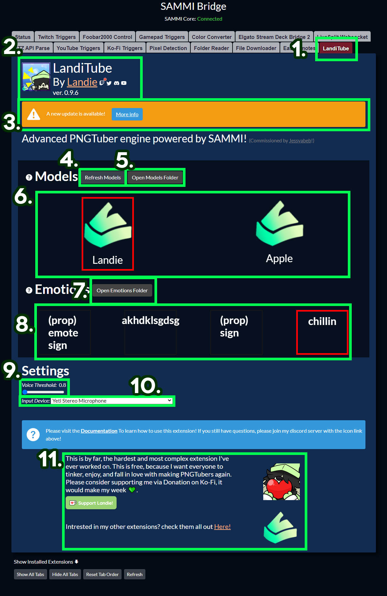
This is what your bridge will look like! lets run by section.
- "LandiTube" bridge tab. This is how you access the web interface for "LandiTube" after installing.
- Defining information about the extension, such as Title, Authors, and their socials. You can see if i'm live or not by the little red circle next to the twitch icon!
- Update banner, should only appear if there is a new update. Clicking the "More Info" button should reveal a modal with a little bit more information about what you'll be installing. Some have important warnings, so be sure to read!
- "Refresh Models" is a very important button to get familiar with. This refreshes the models, and their associated emotions. You should be clicking this everytime a model, emotion, or pose is added or removed. Changing an already existing pose should not require a refresh, but it's a good habit to have regardless!
- "Open Models Folder" is a quick and easy way to get to the folder where the models are stored. A file explorer window will pop up c:
- This is the models list, all valid models will show up here. You are required to have at least one model loaded, and selected (depicted by the red box). Models have entirely different sets of emotions!
- "Open Emotions Folder" provides a quick way to get to the current model's emotions folder. A file explorer window will pop up c:
- This is the emotions list, which changes depending on which model is loaded. The emotions list will only load if there is a selected, active model. You are required to have at least one emotion loaded, and selected (depicted by the red box) for any output.
- "Voice Threshold" is the slider for detecting the sensitivity of your talking. This is a very sensitive slider, and I do not recommend going above 5!
- This allows you to set an input device to listen to for the engine to read. Great for if you're looking to use LandiTube as a TTS mascot, as you can set this to be a virtual audio cable! Make sure to pick the input that is right for you.
- Support footer, which has my donation info, and a direct link to my shop where I have even more extensions (that can interface with this one to create some incredible pngtuber combos!). I would really appreciate it if I could at least get a dollar every now and then üíö
Path Structure
Throughout this section, "LandiTube Path" refers
to(YOUR SAMMI INSTALLATION PATH HERE)\Landies_Extensions\LandiTube
"LandiTube" is built with ease in mind, as a result, all you have to do is make files and folders to create your models and emotions. There are some important notes to keep in mind while creating your directories.
To get a model up and running, You need to have 3 key components down. Models, Emotions, and Poses!
Make sure you've gone into your bridge, and changed the appropriate settings! you'll need to set your mic, maybe tweak the input threshold, etc. Bridge and You has an explanation of the settings section for you!
LandiTube
Models
To create models, you create a folder in the "models" folder in the LandiTube path. All folders inside that folder will create an Icon in your bridge showing that a model is detected, and exists after a model refresh.
After adding a models folder, click the "Refresh Models" button in the bridge to check and see if an icon is generated in the bridge for you! Once you see your model, click on it! This will make the model active, which is required for output.
Here is a visual example of my models folder, where I have two models loaded, and one click on marking it active.
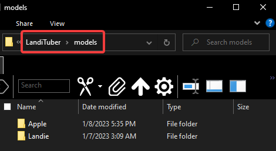

Emotions
To create emotions for your model, you first need to specify an "emotions" folder in your unique model's folder. This is what it should look like:
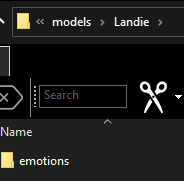
In total, your file path should look something like
(LandiTube Path)\models\(unique model folder)\emotions!
Inside your new "emotions" folder, All folders created will create an Icon in your bridge showing that an emotion is detected, and exists after a model refresh.
After adding an emotion folder, click the "Refresh Models" button in the bridge to check and see if an icon is generated in the bridge for you under your active model! Once you see your emotion, click on it! This will make the emotion active, which is required for output.
Here are some emotions i made in my "emotions" folder inside the "Landie" model folder.
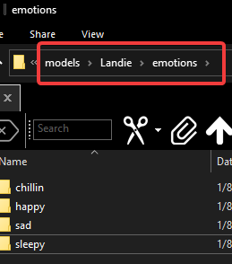
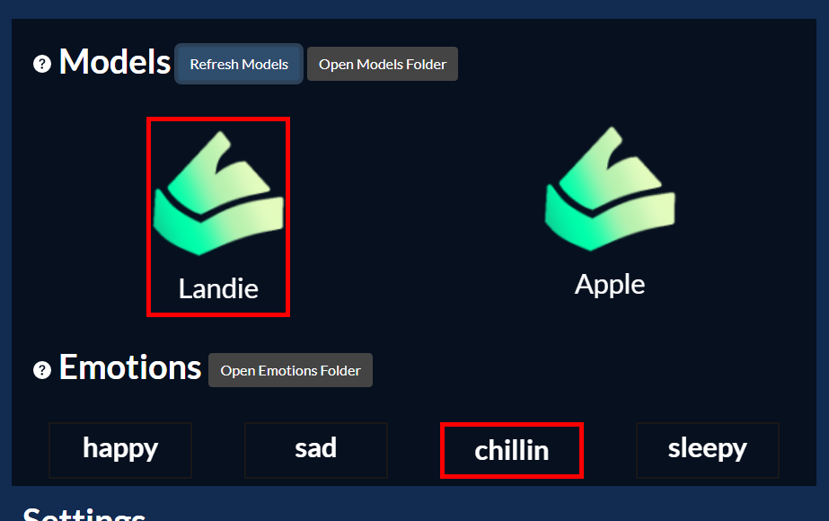
Poses
Now that your model is set up with proper emotions, lets get to the good stuff!
In traditional PNGTubing engines, you had 4 poses per emotion: idle, idle with blink, talking and talking with blink (sometimes you dont even have the blink).
in "LandiTube", you're allowed to have as many idle, and talking poses as your heart desires. Blinking will be discussed further down.
What does that mean? Well, everytime you would go into any of the states mentioned above, it would pick randomly between all of the provided idle, and talking images. You can have multiple talking poses for a single expression to really show natural movement, combined with multiple idle poses!
All poses are places inside one of your unique model's unique emotion folders!
NOTE: You are not required to include multiple poses of each state, or add blink frames for them. the option is just available to you!
lets go over how to set up each state LandiTube provides out of the box!
Idling
To create an idle pose for your tuber's emotion, drag in an image file with the keyword "idle" in it's filename!
For every image containing the keyword "idle" in it's file name inside your emotion folder, those images will be turned into a list of random poses for "LandiTube" to swap to whenever idling is supposed to occur.
Example: Lets make three idle poses for an emotion!
-
Have three idle image files ready! animated or not, its okay! make sure each idle image file contains the word "idle" in there at least once! my files are named
"idle.png","idle2.png", and"idle3.png"respectively. 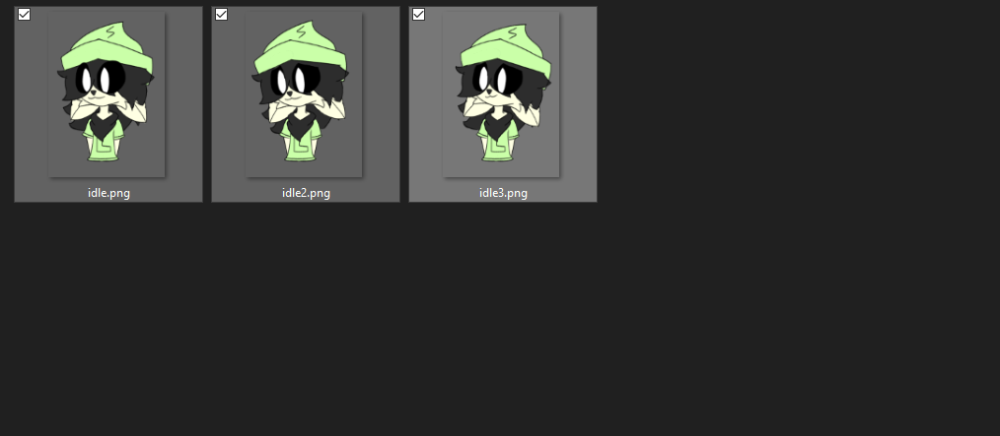 -
Hit "Refresh Models" in your bridge! This should recalculate all the poses you have.
-
Now, whenever you finish talking, It will pick any out of the idle poses provided! 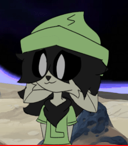
Hmm. That doesn't look great. Lets look into adding some talking poses!
Talking
Talking is the easiest to do!
To create a talking pose for your emotion, drag in an image file named whatever you want! be sure not to include the keywords "idle".
For every randomly named image inside your emotion folder, those images will be turned into a list of random poses for "LandiTube" to swap to whenever talking is detected.
Example: Lets make two talking poses for my PNGTuber to pick from!
-
Have two talking image files ready! animated or not, its okay! Ive named my talking poses
"one paw talkin.png", and"two paws talkin.png". 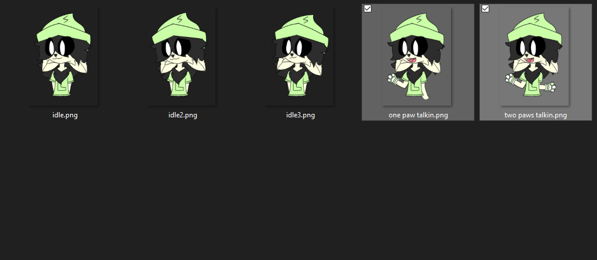 -
Hit "Refresh Models" in your bridge! This should recalculate all the poses you have.
-
Now, whenever you talk, It will pick either one, or the other! 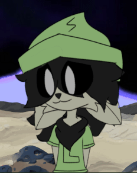
Looks much better! but there is quite a dead stare.. lets add blinking!
Blinking
Talking, and idle poses do not need to have blinking frames, but they are
nice! One nice feature is that blinking is not "all or nothing",
you can set blink frames for whatever poses you want!
Maybe one idle pose
is meant to be a dead stare while the other idle poses have blinks?
Maybe
a character is angry and they don't blink while talking?
To attach blinking frames to your poses, all you have to do is drag in your blinking image with the exact file name of the pose you want to give blinking to, but with "_blink" appended just before the file extension (.png, .gif)
So "idle.png" becomes "idle_blink.png", "one paw talkin.png" becomes "one paw talkin_blink.png", etc.
Example: Lets add blinking frames to all of our inserted idle, and talking poses!
-
Have your blinking image files ready! animated or not, its okay! every image is the same as the other images inside the emotion's folder, but with "_blink" added. Image below! 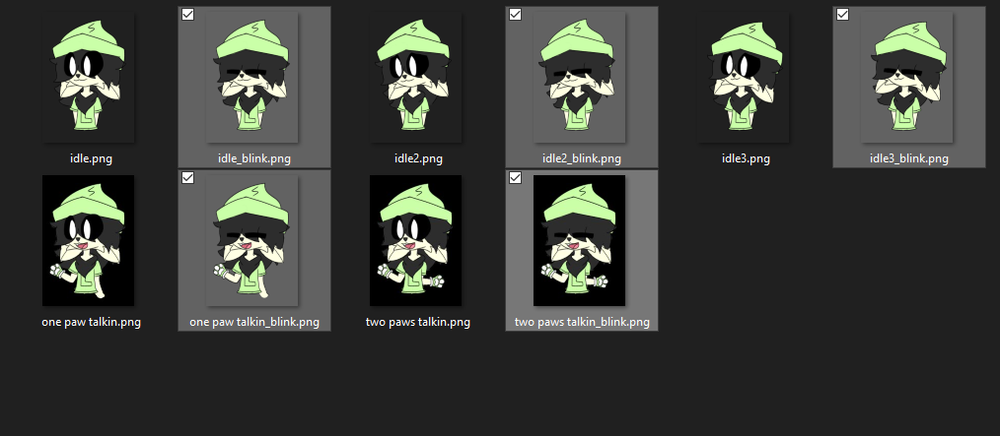
-
Refresh is not needed for blinks! at least i think so. if you see an issue, just hit "Refresh Models"!
-
Now, every pose has blinks! 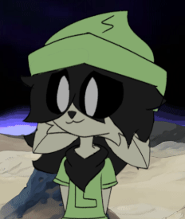
Yelling
Yelling frames are a feature added in 0.14.6 and above, allowing you to specify an extra talking frame that triggers when your voice reaches a higher threshold. You can set this threshold in the settings tab!
The threshold should always be above the talk threshold! Just like the talk threshold, the yelling threshold is sensitive, so keep the number low!
Yell frames are attatched to any talking pose, sort of like how blink frames work!
To attach yelling frames to your poses, all you have to do is drag in your yelling image with the exact file name of the pose you want to give yelling to, but with "_yell" appended just before the file extension (.png, .gif)
So "talking fella.png" becomes "talking fella_yell.png", "mumble.png" becomes "mumble_yell.png", etc.
Important note, if you have a yell frame attatched to a pose that
also is intended to be a blink frame,
"_yell" must be prepended to
"_blink".
Example: "talkin_yell_blink.png" is a yell,
and blink frame!
üìù Example: Let's add yelling frames for all of my talking poses in an emotion!
This emotion only has one talking pose and one talking pose with a blink frame, so I'm providing two yelling frames for each one.
- Gather all of your yelling frames! png, gif, mp4, webm, you name it! You don't need to have a yell frame for every single talking pose, just apply them to the poses you want!
- ensure the files are named accordingly. For me, I have one talking pose
"talk.png", as well as one with a blink frame attatched,
"talk_blink.png". I want both of these to have a yell
frame!
"talk.png" becomes "talk_yell.png"
and
"talk_blink.png" becomes "talk_yell_blink.png" - drag the images into my model's unique emotion folder!
- click "Refresh Models", bam yelling frames.
Layers
When you create a LandiTube model, you draw poses and frames! But what if you want to give your model a prop, such as...
- A hat that follows your model's head movement?
- A handheld item (pen, drink, food) that follows your model's hand movement?
- Clothing that has various moving parts?
Sounds like a pain in the ASS to re-draw All of your poses just to have one prop, then create a whole separate Emotion to toggle to, right??
This is where layers step in!
Layers, introduced in 0.20, are used to dynamically change what is displayed in front of or behind your model based on its active pose, without directly changing the model itself!
The way this is accomplished is by generating a source which acts as a freely-transformable reference of an OBS Scene that you can align wherever you want per pose. It's not as complex as you think!
Head on over to the "Layers" tab in the bridge so we can try it out!

You should have two layers available to you (for now), Front layer, and Back
Layer. In order to use these we first need to create an OBS Scene for the
layers to reference, so lets go into OBS and create a new scene.
I'll
call mine "Hats"!
After doing so, lets add an image of a cute
hat using an Image Source! I'll align my hat to the center of the scene.

Back in the bridge, lets set our front layer to the scene "Hats". and see what happens!

Woah, thats weird lookin.
What happened, is it has merged [LandiTube], and the
Hats scene together, and it doesn't look so great! lets
tweak it!
In OBS, if we go into the [LandiTube] Layers (Front) scene,
we'll see a source for every pose and frame we have loaded into
LandiTube. Pretty funky names!

Each of these sources are referencing our Hats scene, and we can
freely move these sources as we please! each source is attatched to a pose,
meaning that when poses change, the sources toggle themselves too depending
on what pose you're on!
We can transform each individual source however we want per loaded pose!

We have a bit of a problem though. We can't see our model, how the heck are we supposed to align these sources properly??
To see your model and transform the sources in the layer scene at
the same time, right click the [LandiTube] Customize scene and
click "Windowed Projector (Scene)". This will pop out a window of
this scene, which contains your model, plus it's layers without the
squishiness so you can align your sources easier!
Right click the window
and click "Always On Top" so the window will always be visible
while editing in OBS.

Cool! we can head back to [LandiTube] Layers (Front) and start
messing with our sources and see our model at the same time for alignments.
But there is another issue!
It's really hard to
align some poses like ones with blink frames attatched, because they are
only a split second long!
I also have trouble selecting the source I
actually want to edit and i keep grabbing all the other ones!
This can all be fixed by using the Pose Selector!
In the bridge under the "Layers" tab, towards the bottom there is a
"Pose Selector" section!
In here, you can click on any pose
loaded for your model which will freeze the engine and allow you to take
your time aligning your sources, as well as making sure only the
corresponding source in the layers scene is able to be transformed.

So much better! So far, everything is going well! We can see our model while moving around sources in our layers scene, we can freeze the engine to take our time aligning our sources on a specific pose, and fix the issue of selecting unrelated sources! Let's start aligning some sources!
You can crop, squish, stretch, rotate, do anything you want to these sources to fit them just how you like, to your model! Go nuts!
You may encounter one final hiccup however... what if two poses don't have any extra movement in a specific area?? Do I have to manually try to align them perfectly?

No!
You can copy and paste transformations between sources in OBS! right click
the source you want to copy all of the transformation properties from, and
click Transform > Copy Transform. from there, right click
the source that you want to have the exact same transformation, and click
Transform > Paste Transform. Perfect! Now they are perfectly
aligned, no jitter!

Here are some pro tips to transform sources easier in OBS:
- Use the ARROW keys to nudge sources by the pixel, and hold SHIFT to move in 5 pixel increments.
- Hold the CONTROL key while dragging, or rotating to disable source snapping to avoid having your sources snap places you don't want them!
- Holding the SHIFT key while rotating will snap the source rotation by 15 degree increments!
- Hold the Left ALT key while dragging a side to easily crop a source (this is highly not recommended when transforming sources in a layers scene)
- Use filters! each source clone is independant of each other, so you can
add a filter like 3D
Effect by Exeldro to move a source in a 3d space, or add a
user-defined shader with the automatically installed obs-shaderfilter
fork by Exeldro and use the
corner-pin.shaderfile to map corners of a source to different coordinates. Play around! have fun!
With this knowledge, you should be a pro at aligning all of these sources
just the way you want them on your model!

When finished with your layer, click Resume Engine in the "Layers" tab of your bridge, otherwise your model will appear frozen when trying to get it to talk!

Okay Landie, I did all of that work and I have a hat that perfectly aligns to my head. What is the benefit of this again??
Keeping the [LandiTube] Customize scene in a window projector,
heading over to the Hats scene (the scene all of our sources in
our layer scene are referencing), swap the image!

As you can see, its now incredibly easy to swap out this hat for any image we want and have it already apply all the transformations needed to align to our model! make it a gif, or a png!
But this is an entire scene we are working with in OBS.
we have All types of sources available to us, not just
Image sources!
Get wild! Use a media source, a display capture, maybe a
browser source for friends in a discord call to sit on your head, sky's
the limit!

Combining this capability with the limitless functionality of SAMMI will allow you to have your viewers change various aspects of your layers, making your stream the most unique out there!
- Twitch channel point redeems to change hats, glasses, held objects
- Rotate a source around whenever you speak, for maybe tails?
Anything you could imagine!
Please check out the Tutorials section of the site to look at a couple of step-by-step guides on how to capitalize on the functionality of layers using SAMMI, and the LandiTube API!!
Displaying In OBS
"Okay I put in my files, clicked my model to set it as active, and my emotions with one active, where is my fella??"
To display your model is really easy!
- Navigate to your desired OBS Scene, and click the plus ➕ sign, or right click the "Sources" pane to click add, and select "Scene". This will allow you to "nest" another scene as a source!
- Select the scene that says "[LandiTube]". You may see other scenes such as "[LandiTube] Customize", and "[LandiTube] Model Movement". These are explained further down in the Custom Events section. Don't click these!
- Voila! Hold ALT while dragging the sides to crop, resize however you like, the fella has arrived!!
Commands
LandiTube: Change Model
Changes the current model to another valid model!
| Box Name | Type | required? | Description |
|---|---|---|---|
Model Name | Dropdown | ✔ | The name of the model you wish to swap to. (casing matters!)|
LandiTube: Change Emotion
Changes the current model's emotion to another valid emotion!
| Box Name | Type | required? | Description |
|---|---|---|---|
Model Name | Dropdown | ✔ | The name of the emotion you wish to swap to. (casing matters!)|
LandiTube: Pause Engine
Pauses all actions of the engine, leaving your character stuck in stasis. poor lad!
| Box Name | Type | required? | Description |
|---|---|---|---|
Reset Squish | boolean (checkbox) | ✔ | If ticked, after executing the command, the engine will stop and the proportions wil|
LandiTube: Resume Engine
Resumes default engine behavior c: For use after previously pausing the engine! otherwise this command is just a fun paperweight in digital form~
Custom Events using API
Like the engine, but want to add your own integrations using SAMMI? You can absolutely do that with relative ease if you know SAMMI! The PNGTuber engine provides various different environments and data for you to listen to, and read!
First, lets go over the Extension Triggers provided by "LandiTube".
Extension Triggers
Extension triggers are a way for a SAMMI button to be ran based on certain criteria specified by the Engine. This works exactly like if your button is set up to trigger on twitch chat. You can read more about extension triggers and SAMMI here.
Currently, there exist these Extension Triggers:
| Extension Trigger | Description |
|---|---|
LandiTube talking true |
triggers a button when the character starts talking |
LandiTube talking false |
triggers a button when the character is finished talking |
LandiTube blinking true |
triggers a button when the character blinks |
LandiTube blinking false |
triggers a button when the character is done blinking |
LandiTube yelling true |
triggers a button when the character yells |
LandiTube yelling false |
triggers a button when the character is done yelling |
LandiTube model changed |
triggers a button when the model is changed from the current active model |
LandiTube model (modelname) |
triggers a button when the model is changed and matches a specific model |
LandiTube emotion changed |
triggers a button when the emotion is changed from the current active emotion |
LandiTube emotion (emotionname) |
triggers a button when the emotion is changed and matches a specific emotion |
Each extension trigger returns the same hefty amount of juicy data when that extension trigger was sent for you to read and tinker with.
You can pull these values using the command
"Trigger Pull Data" on a button that was triggered
with one of these Extension Triggers mentioned above.
Here are the list of fields you can enter in the Pull Value box:
| Pull Value | Type | Description |
|---|---|---|
blink |
boolean | Current blinking state |
current_emotion |
string | The current set expression of the active model |
current_emotion_path |
string | the current image path compiled together using
global.main_directory, current_model,
current_state, and
current_emotion_state_extension |
current_emotion_poses_idle |
Array | An Array of the current model's idle poses (not including blinks) |
current_emotion_poses_talking |
Array | An Array of the current model's talking poses (not including blinks) |
current_emotion_state_extension |
string | The current state's file extension to be used in conjunction
with current_state to create a full file |
current_model |
string | The current active model |
current_state |
string | The current active state of the model. This the result of various impacting factors such as yelling, blinking, talking, and randomly drawn poses |
current_state_has_blink |
boolean | If your state has the ability to blink or not! Version 0.13.2^ |
talking |
boolean | Current talking state |
yelling |
boolean | Current yelling state |
Welcome to knowledge!
This part of the site is pretty incomplete, but it will be populated with video/text tutorials when I can get around to it! It's hard to do all of this stuff on my own...
Feel free to make your own tutorials, I'll link them here with proper credit and a link to your channel/personal site/social!
How to set up your first Model
Check out the documentation and read from "Path Structure" all the way up until "Custom Events"! Its a step-by-step guide showing you how to get your pngtuber up and running from nothin' to somethin'!
Adding cool glasses via Layers
Dang, I want to be able to give my model some SICK glasses.
Lets do it!
Setup
Head on over to the [LandiTube] Customize scene, and add the
image of your cool glasses as an image source! or a media file... idk maybe
your glasses are EXTRA cool or sumthin' yo.

While we are at it, lets also make our button in SAMMI.

Adding extension triggers to button
Using the Extension Triggers list provided in the docs, we need to identify which ones we need
for the job.
Lets see. I want the glasses to move around whenever my head tilts from a pose change! my pose changes when i talk, and when i'm done talking. Knowing this, we know we will need the following extension triggers on our button:
- LandiTube talking true
- LandiTube talking false
Something awesome about SAMMI is, you can set a wildcard () in place of where the word true/false is so you only need to specify this trigger once because we want both of those to trigger the button anyways. Our two extension triggers become one trigger: `LandiTube talking `! Navigate to the triggers menu of your button, and add that trigger.

Pulling the pose data
We need to identify which poses are moving the head in a way where we will
need to adjust the glasses' Position, and
Rotation. In my case, its two of my idle poses:
idle2 and idle3. The head leans to the left on
idle2, and on the right for idle3. All of my other
poses have the head in the center.

In our button, lets pull the pose data using Trigger Pull Data,
and filling the Pull Value box with
"current_state". This tells us what pose our model is
in at the time the button was triggered which in our case is whenever our
talk state changes. I'll name the variable currentState!

Now if we open our variable viewer and chit chat away, we can see this variable populating with our current pose's name!

Reading, and doing something based off pose data
I need to check this value for whenever it equals idle2, or
idle3 so i can have something happen whenever those poses are
detected.
Let's add a "Switch Statement", and fill it's box with our
currentState variable. A switch statement matches certain cases
of text, so, we need to add three "Case Statement" blocks within
our switch statement block. One case will look for idle2,
another will look for idle3, and since every other pose keeps
the head in the middle, we'll add a "default" case for our
third block ("default" triggers when the currentState
variable doesn't match any of the other cases!).

"What about the blinks? Aren't those poses as well?"
Yes! we need to make sure those poses are accounted for as well, even though
we are only triggering this button when our talking state changes, not when
we blink. There is a slight chance that once we finish talking, we'll
finish while we are blinking, so poses like idle2_blink and
idle3_blink will be checked. We don't have matching cases
for those which in turn will make the glasses move the wrong way due to
triggering the "default" case!
Thankfully, this is a really simple fix. on each of our case blocks looking
for our idle poses, clicking the little plus ➕ icon next to the text box
will allow us to add another matching case to one case statement block!
since idle2 and idle2_blink move the head to the
left, we'll have those two on one block, while idle3 and
idle3_blink are on another.

Okay, I think we have everything. Let's add some alert messages in these case statement blocks, to help us determine if we set this up properly!

Testiiiiinnggg.....

Success! the alert messages seem accurate, so lets try making the glasses move now.
Source Motion in OBS using Move Transition
Unfortunately, SAMMI's built in motion commands aren't reliable, but we have an even better alternative: Exeldro's "Move Transition" plugin (that guy is a godsend, please support him). This plugin is required for LandiTube to even work, so you'll have it installed üôÇ
Let's right click the [LandiTube] Customize scene (yes, the
scene) and add a "Move Source" filter on it. we want to move our
glasses, so lets select that source. We want no transitions, so set the
Custom Duration to 0ms. If you can't
set it to 0, please update Move Transition to the latest version,
you'll be able to do it and it's wonderful!

Next, we need to position our glasses. I'll delegate this filter to
moving our glasses to the middle. In OBS, position the glasses how you want
(rotation, scale, position, all that stuff!) and in the filter's
settings, hit the Get Transform button. This will take the
current transformation the glasses are in, and inject it into the filter.
congrats! you have your first move state, give it a memorable name! i'll
call mine "glasses-middle".

I'll repeat the process and create "glasses-left" and "glasses-right".
Toggling between the filters, looks good to me!

let's implement these turning on, into our button.
In our cases, put Filter Change Visibility commands to turn the
visibility on for whichever position we'd like the glasses to move to.

huzzah!

A hiccup when changing emotions...
are we done? not yet... I change my emotion, and the glasses are still there... oh no! My other emotions could have entirely different poses that i'd have to check for, or maybe i just want them on one of my emotions. the heck do we do?

We could pull the current_emotion variable and check to see if
it's the right emotion using Trigger Pull Data, then
afterwards, all we do is add an if statement before we begin any "pose
checking". If the emotion is equal to the emotion we want for these
glasses, show the glasses! otherwise, hide them!

however, remember! This button is setup to only run when our talking state changes. This means that even if we change emotions, nothing will happen until we talk again.

We need another trigger.
In your triggers menu, add a new Extension Trigger with the name
of
- LandiTube emotion *

Now, the button will trigger for any emotion change, and we can properly test
that current_emotion variable.
WHABAM, awesome shades, and I didn't need to re-export my art files or get a whole separate emotion set just for some shades!

Some important things to note:
Maybe your SAMMI Installation is doing a bunch of other stuff and causing slight lag, or maybe you're changing emotions too fast. Heres what might happen to you (simulated lag):

Oh dang, those glasses couldn't read the emotion somehow, and thought it was still "chillin"! why??
Maybe you have a complex button, and it takes a while to finish. SAMMI won't execute overlapping buttons, however, you can very easily fix this in two ways.
Turning off "Local Variable Persist" and turning on "Button Overlap" in the button settings
OR
Turning on "Allow queue" in the button's settings, and giving the button a unique group/queue name.
Each of these have their own use cases, but in our case, the easiest would be the first option, because we aren't doing anything super complicated. This allows the button to overlap execution, so if this button is still running while triggered again maybe from a fast action, it will still run regardless.
If you have a bit more of a complicated button, and would rather wait until it is fully done executing because there might be some important output for another function, add it to a queue instead with option 2!
More tutorials will be made to better get an understanding of when this should be used.
Welcome to the helpdesk!
Sorry you had to come here, I'm trying my best! Check out the sidebar to see if there is anything related to the issue you're experiencing!
Installation
I Keep getting yellow messages telling me that I need OBS scenes, what?
Please refer to the setup tab to install your OBS scenes using the Source Copy OBS plugin.
Whenever I startup SAMMI with LandiTube installed, it takes FOREVER to load and sometimes crashes
Make sure you have your Local API enabled in the SAMMI settings, as per instructions from installing the "Folder Reader" extension.
Do not set a password!
Models
I made a model folder, but i can't find it in the bridge!
Make sure your model folder is located in
(YOURSAMMIINSTALL)\Landies_Extensions\LandiTuber\models folder.
Make sure to select it in the bridge afterwards!
Emotions
I added my emotions inside my models folder but when i refresh nothing happens!
You need to make an "emotions" folder inside your unique model's folder first, and make your emotion folders within there. Common mistake!
Make sure to select at least one emotion once you set them up.
Poses
Display
One of my model's poses is huge, and not aligned properly!
0.14.6^ use a dynamic source creation process to add your poses, and sometimes things happen during that process and don't get created properly!
Thankfully, this is an easy fix!
- Head over to the
[LandiTube] Default Rendererscene - Locate the problematic source (to locate, look for the problematic source that has the model name at the beginning emotion name in middle, and pose name at the end for easy finding.
- Delete the source!
- In the bridge under the LandiTube tab, click "Refresh Models"
- Give it a moment to regenerate the missing source, and see if it fixed your issue!
If the issue persists even when deleting the source, try it again, as it's a rare bug! once its fixed, you should never have to touch it again unless you remove the model!
Settings
I can't change the settings, I already have OBS Connected!
Try restarting SAMMI. This is common on first installations, and I'm still tracking it down! Restarting SAMMI should fix this no problem c:
My voice isn't being picked up!
There might be four things causing this:
-
Input device not set
- Head on over to the bridge, click the "LandiTube" tab.
- Click the "Input Source" dropdown button to select
your input device!
If you don't see your device there, or, you select it and nothing changes, check the below issue!
-
Move Transition OBS Plugin not installed
- Head on over to the Move Transition Download Page
- Make sure you are downloading 2.8.1 or higher!
- Close OBS, install, and re-open OBS.
- Reinstall LandiTube if nothing fixes right away
- Voice Threshold is too high
- Head on over to the bridge, click the "LandiTube" tab.
- adjust the "Voice Threshold"
- Weird SAMMI issue
Sometimes, SAMMI breaks when reading an OBS source and is unable to get the visbility state that is being constantly changed. Heres what to do:- Head over to SAMMI's "OBS Connection" settings and Disconnect, then reconnect OBS.
- This should fix your issue, if not, try one more time, then let me know you're still struggling. It works eventually, and once it starts working after install, i've never had a problem with it happening again :3c
-
Delete OBS Scenes, reinstall Scenes
Rarely, upon installation move transition will fail to pick up any input (discovered thanks to PixelGourmet) and the solution is to reinstall the scenes a specific way!- Delete all scenes with the prefix "[LandiTube]"
- Disconnect SAMMI from OBS in SAMMI's "OBS Connections" menu temporarily
- Reinstall scenes from "LandiTube Scenes.json"
- Reconnect SAMMI to OBS from "OBS Connections" within SAMMI
- Change the input device of "LandiTube Voice" located in the scene "[LandiTube] Model Movement"
- Hopefully everything is good?
If you don't see your device there, or, you select it and nothing changes, check the below issue!
I cant select my input device, or, I selected my device and nothing is happening!
Unfortunately it looks like i suck, and the interface i made for selecting your input source doesn't work right.
There is a way to fix this, but its a bit more manual! follow these steps:
- Head over to OBS, and check out the
"
[LandiTube] Model Movement" scene. - Click on the source "LandiTube Voice", hit properties, and change it to your input device.
- Afterwards, if nothing happens when you speak, enable and disable the LandiTube Voice source. This should work!
0.16.0
- NEW: Added .mp4 support
- NEW: Added .ts support
- NEW: Added .mov support
- NEW: Added .flv support
- NEW: Added .mkv support
- NEW: Added .avi support
- NEW: Added .webm (VP8) support, allowing efficient, high quality, alpha supported (semi-transparent, transparent) video to be used as poses! basically the better .gif!
0.15.0
- REWORK: Changed the auto lua-script installer for a new one that is far more stable
- REWORK: Changed the way an input source is changed via bridge
- NEW: Added SAMMI Command "LandiTube: Change Vertical Smoothing"
- NEW: Added SAMMI Command "LandiTube: Change Vertical Squish"
- NEW: Added SAMMI Command "LandiTube: Change Horizontal Smoothing"
- NEW: Added SAMMI Command "LandiTube: Change Horizontal Squish"
- BUG FIX: fixed input source never changing properly
- BUG FIX: fixed lua installer infinite loop
- BUG FIX: fixed OBS installer infinite loop
0.14.6
- REWORK: Filter settings saved differently, updates no longer overwrite custom settings
- REWORK: OBS Source Layers have been Entirely Reworked, natively built into LandiTube, no need to touch SAMMI! tutorial in the coming days!
- REWORK: Rendering has been Entirely Reworked, dynamically generating image sources for every pose that exists in the models folder.
- NEW: Yelling poses! add "_yell" at the end of your pose file's names (before _blink) to set a yelling pose!
- NEW: Yelling threshold slider in config to display yelling varient of a pose!
- NEW: Yelling delay slider to determine how long the yell pose is displayed on stream after falling below yell threshold
- NEW: Automatic LandiTube Scene and Source installer
- NEW: Automatic LandiTube lua script installer
- NEW: Automatic Scene Collection backup on lua install
- NEW: bundled tool: gifdiff
- NEW: bundled tool: gifsicle
- NEW: bundled tool: ffprobe
- BUG FIX: pose debugger sometimes not freezing on the correct pose
- BUG FIX: active emotion being reset on update
- BUG FIX: active model being reset on update
- BUG FIX: setting input device in settings not taking effect
- BUG FIX: fixed long model names looking awkward in bridge
- QOL: Model icons size significantly decreased
- QOL: Model icons formatted differently to not stretch across screen
0.13.2
- BUG FIX: Fixed the command
LandiTube: Pause Enginenot properly working after backend rewrite - BUG FIX: Fixed the helper "Poses" list in bridge not properly working after backend rewrite
- BUG FIX: Fixed .gif files not properly working after backend rewrite (devnote: might need extra edits)
- BUG FIX: Model no longer squishes if there is no blink frame for current state
- BUG FIX: Model no longer squishes during blink while talking
- NEW: LandiTube Data addition
current_state_has_blink! with every extension trigger, get a boolean (true/false) if your character can blink!
0.13.1
- QUALITY OF LIFE: Refresh time significantly reduced
- QUALITY OF LIFE: Model swapping is now instant!
- BUG FIX: "Input Device" being reset on reload
- BUG FIX: "Input Device" devices sometimes not showing up in bridge
- BUG FIX: Prevent invalid emotions or models to be loaded via
LandiTube: Model Change, andLandiTube: Emotion Change. - BUG FIX: Fixed certain devices causing a crash due to special characters
- BUG FIX: Fixed crash for certain common special characters being in the name of Models, Emotions, and Poses
- NEW: Rewrote entire backend. my head hurts.
0.11.0
- NEW: Fixed clipping of buttons on small bridge sizes
- NEW: Added Dropdown: Voice Meter Type
- NEW: Added Slider: Voice Delay
- NEW: Added Slider: Vertical Easing
- NEW: Added Slider: Vertical Squish
- NEW: Added Slider: Horizontal Easing
- NEW: Added Slider: Horizontal Squish
- NEW: Added input boxes to all sliders for precision
- BUG FIX (MAYBE): Attempt to fix "Input Device" dropdown. If this still doesn't work, refer to the troubleshooting section to select your input device manually c:
- BUG FIX: Fixed documentation link in the bridge being literally blank
- BUG FIX: Fixed clipping of buttons on small bridge sizes
- BUG FIX: Update banner takes you to patch notes screen with download button now and not the same place...
- BUG FIX: Now the deck is ACTUALLY fixed my bad :3
0.10.0
- NEW: Poses section dividers: separated between idle, and talking poses
- NEW: Poses section button: "Resume Engine", resumes the rendering engine from a frozen state for use after clicking a pose button to restore function
- NEW: Poses section button: "Toggle Blink Frames", allows you to freeze blink frames in time aswell (displays nothing if a pose has no blink counterpart
- NEW: Poses section button: "Open Emotion's Folder", to go to where poses are stored for the current model's emotion!
- NEW: Poses section: click a pose to freeze in time to align your layers!
- NEW: Revamped emotion list layout, uses full width rows for easier clicking
- NEW: Added "LandiTube: Pause Engine", stop the rendering engine in it's tracks!
- NEW: Added "LandiTube: Resume Engine"
- BUG FIX: Fixed crash on SAMMI deck load, your deck is alive again!
- TYPO FIX: Changed command names from "LandiTuber" to "LandiTube"
0.9.11
- BUG FIX: ok i didn't actually fix it last update so get bamboozled its fixed now
0.9.10
- BUG FIX: Update link was brokie oops my bad
0.9.9
- Initial Beta Release üéâ